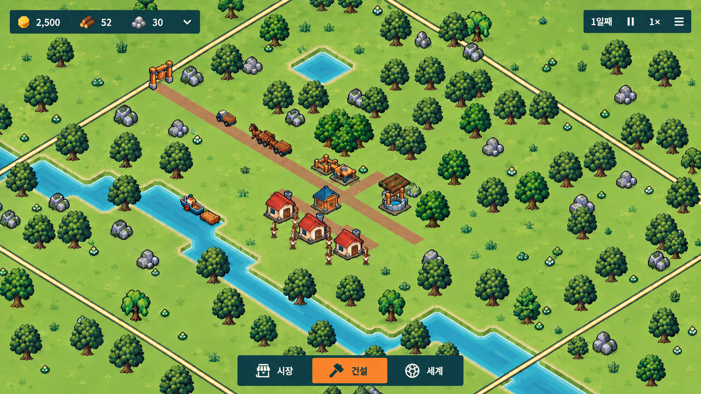

타운그리드 · 미니멀 UI
같은 배치의 기본·건설·시설 선택 상태입니다.

기본 조작만 보이게자원은 3개만 표시하고 나머지는 펼쳐 봅니다. 시간은 현재 배속만 표시합니다.
작업창은 하나씩건설 목록과 시설 정보가 같은 하단 영역을 사용합니다. 닫으면 기본 메뉴로 돌아갑니다.
상세 정보는 필요한 때목표·납품·주민·설정은 메뉴에서 열고, 카메라는 드래그·휠·Q/E로 조작합니다.
같은 배치의 기본·건설·시설 선택 상태입니다.

기본 조작만 보이게자원은 3개만 표시하고 나머지는 펼쳐 봅니다. 시간은 현재 배속만 표시합니다.
작업창은 하나씩건설 목록과 시설 정보가 같은 하단 영역을 사용합니다. 닫으면 기본 메뉴로 돌아갑니다.
상세 정보는 필요한 때목표·납품·주민·설정은 메뉴에서 열고, 카메라는 드래그·휠·Q/E로 조작합니다.